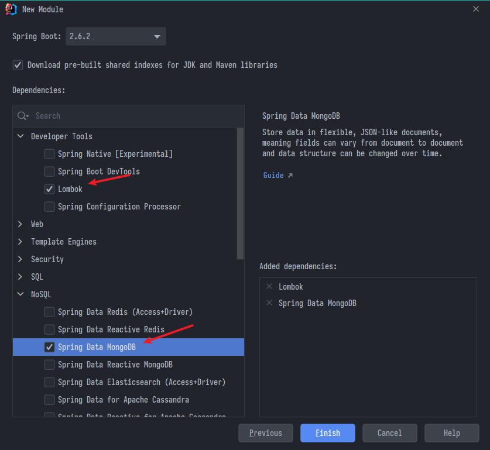
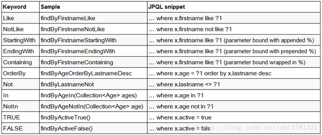

MongoDB
尚硅谷Spring筆記-07
MongoDB
茫狗DB
- 屬於NoSQL，非關聯式
- 以JSON的格式儲存資料
- 強處:高併發讀寫、巨量資料、擴展好
- 弱點:交易
前置
# 拉取鏡像
docker pull mongo:latest
# 創建和啓動容器
docker run --name mymongo -p 27017:27017 -d mongo
# 進入容器
docker exec -it mymongo /bin/bash
# 使用MongoDB客户端進行操作
mongo
庫操作
// Help查看命令提示
db.help()
// 切換/創建資料庫(如果不存在就創建)
use test
// 查詢所有資料庫
show dbs
// 刪除當前使用資料庫
db.dropDatabase()
// 查看當前使用的資料庫
db 或 db.getName()
// 顯示當前db狀態
db.stats()
// 當前db版本
db.version()
// 查看當前db的鏈接機器地址
db.getMongo()
- 剛建立的db在show看不到，直到其中存了實際的資料才算數
命名限制
- 不能是空字符串
"" - 不得含有
' '(空格)、.、$、/、\和\0(空字符) - 避免用
_下畫線開頭 - 應全部小寫
- 最多64字節
名詞對應
| SQL | Mongo | 解釋/説明 |
|---|---|---|
| table | collection | 表/集合 |
| row | document | 行/文檔，即一筆資料(如:張三…) |
| column | field | 字段/域，欄位(如:姓名) |
| index | index | 索引 |
| join | embedded | 表連接，MongoDB叫嵌入但略有不同 |
| primary key | _id | 主鍵，MongoDB自動將_id當主鍵，沒指定就自動創 |
集合操作
相當於操作"表"
// 創建集合(options為可選項，可指定大小等等)
db.createCollection(name, options)
// 看
show collections
// 刪
db.collection.drop()
- 避免用
system.開頭，那是系統保留的集合 - 區分大小寫，spring中集合通常對應Java的實體類的集合，故以大寫開頭
文檔操作
相當於操作"一筆資料"
// 增 (如果有指定_id則為更新或用insertOne)
db.COLLECTION_NAME.insert(document)
// 增-更新
db.COLLECTION_NAME.insertOne
// 查
db.COLLECTION_NAME.find(query, projection)
// 漂亮查(易讀)
db.COLLECTION_NAME.find().pretty()
// 改
db.COLLECTION_NAME.update()
// 刪
db.COLLECTION_NAME.remove()
- 區分大小寫
- 鍵值對有序
- KEY不可重複
綜合範例
use testdb // 切換到測試庫
// 創建資料
db.user.insert({name:"Tom",age:21,adult:true})
db.user.insert({name:"John",age:26,adult:true})
db.user.insert({name:"Mary",age:5,adult:false})
db.user.insert({name:"Tim",age:32,adult:true})
// 查
db.user.find()
// 結果會類似這樣
{ "_id" : ObjectId("61da9528280ffa000f93a5b3"), "name" : "Tom", "age" : 21, "adult" : true }
ObjectId是基於時間、機器、PID等等遞增創造，總之在一台機器上不會重複- key可以不用包引號，字串單引號跟雙引號沒差，但為了統一最好都用雙引號
db.user.find({name:"Tom"})
// 只想顯示某些欄位
select name, age from user where age = 21
db.user.find({age:21}, {name:1, age:1})
// 排序，1為升序，-1為降序
select * from user order by age
db.user.find().sort({age:1})
// in
select * from user where age in (21, 26, 32)
db.user.find({age:{$in:[21,26,32]}})
// count
select count(*) from user where age > 20
db.user.find({age:{$gt:20}}).count()
連接Java
- 新建一個spring initializr模組

- 到
application.properties新增連線
spring.data.mongodb.uri=mongodb://localhost:27017/test
- 建立一個測試用的User類
@Data
@Document("User")
public class User {
@Id
private String id;
private String name;
private Integer age;
private DateTime createDate;
}
@id表示主鍵
MongoTemplate
-
使用Spring提供的MongoTemplate類執行CRUD
- 優勢在於靈活
-
直接引用類，造一個操作用的模板
@Autowired
private MongoTemplate mongoTemplate;
增
- 返回的是完整的物件訊息
void test1() {
User user = new User();
user.setId("01");
user.setName("Tom");
user.setAge(20);
user.setCreateDate(new DateTime());
User insert = mongoTemplate.insert(user);
System.out.println(insert);
}
查
- 需要指定返回的
.class - id要用
""包住 - 注意query導的包
org.springframework.data.mongodb.core.query
void test2() {
// 查全部
List<User> all = mongoTemplate.findAll(User.class);
System.out.println(all);
// id查
User byId01 = mongoTemplate.findById("01", User.class);
System.out.println(byId01);
// 條件查
Query query = new Query(Criteria.where("name").is("Tom").and("age").is(20));
System.out.println(mongoTemplate.find(query, User.class));
}
正則查
void test3() {
// 查name包含"om"的
String name = "om";
// 先寫正則式
String regex = String.format("%s%s%s", "^.*", name, ".*$");
// 引入pattern物件，選特性例如忽略大小寫,Pattern.CASE_INSENSITIVE
Pattern pattern = Pattern.compile(regex,Pattern.CASE_INSENSITIVE);
Query query = new Query(Criteria.where("name").regex(pattern));
System.out.println(mongoTemplate.find(query, User.class));
}
分頁查
void test4() {
// 設定當前頁與一頁幾筆
int pageNo = 1;
int pageSize = 3;
// 查總筆數
Query query = new Query(); // 無條件
System.out.println(mongoTemplate.count(query, User.class));
// 分頁查，還是那個熟悉的公式
List<User> userList = mongoTemplate.find(query.skip((pageNo - 1) * pageSize).limit(pageSize), User.class);
System.out.println(userList);
}
改
先查再改
public void updateUser() {
Query query = new Query(Criteria.where("_id").is("01"));
Update update = new Update();
update.set("age", 20);
System.out.println(mongoTemplate.upsert(query, update, User.class));
}
刪
也是要先查再刪
public void deleteUser() {
Query query = new Query(Criteria.where("_id").is("01"));
System.out.println(mongoTemplate.remove(query, User.class));
}
MongoRepository
- SpringData提供的
MongoRepository類也能CRUD- 優勢在於簡單
- 首先造一個接口繼承MongoRepository，然後創建實例
public interface UserRepository extends MongoRepository<User,String > {}
@Autowired
private UserRepository userRepo;
查
insert一樣就不多說
- 條件查變成用Example類
// 查全部
List<User> all = userRepo.findAll();
System.out.println(all);
// 查id
User byId01 = userRepo.findById("001").get();
System.out.println(byId01);
// 條件查
User user = new User();
user.setAge(10);
Example<User> userExample = Example.of(user);
System.out.println(userRepo.findAll(userExample));
// 模糊查，用ExampleMatcher
ExampleMatcher em = ExampleMatcher.matching().withStringMatcher(ExampleMatcher.StringMatcher.CONTAINING);
User user = new User();
user.setName("om");
Example<User> userExample = Example.of(user, em);
System.out.println(userRepo.findAll(userExample));
分頁查
- 注意0是第一頁
- 返回的是一個Page物件
void test4() {
// 設定當前頁與一頁幾筆，注意0是第一頁
PageRequest pageRequest = PageRequest.of(0, 3);
// 分頁查
Page<User> all = userRepo.findAll(pageRequest);
System.out.println("TotalPage = " + all.getTotalPages());
List<User> content = all.getContent();
System.out.println("content = " + content);
}
改
先查再改
- save方法，如果_id已存在就會修改覆蓋，否則是新增
- mongo官方的
save操作也是這樣，但是新版已經被廢棄，被insertOne()取代
- mongo官方的
//修改
@Test
public void updateUser() {
User id01 = userRepo.findById("01").get();
id01.setName("9999");
System.out.println("userRepo.save(id01) = " + userRepo.save(id01));
}
刪
- 沒有返回值，就不聲不響地刪除掉
public void deleteUser() {
userRepo.deleteById("001");
}
自訂方法
- 還記得一開始繼承MongoRepository的接口嗎，Spring Data在這邊提供強力支援
- 只要符合規範，接口內定義的方法就會自動被實現，無須手動創造


- 簡單來說就是以find、read、get開頭，符合bean中的屬性並以駝峰相連，例如:
@Repository
public interface HospitalRepository extends MongoRepository<Hospital, String> {
Hospital getHospitalByHoscode(String hoscode);
}
- 也就是說當想操作bean的時候，直接在service層用xxxRepository.硬寫對應的方法，IDEA會報紅然後直接alt+enter快速產生，完成
上次修改於 2022-01-17